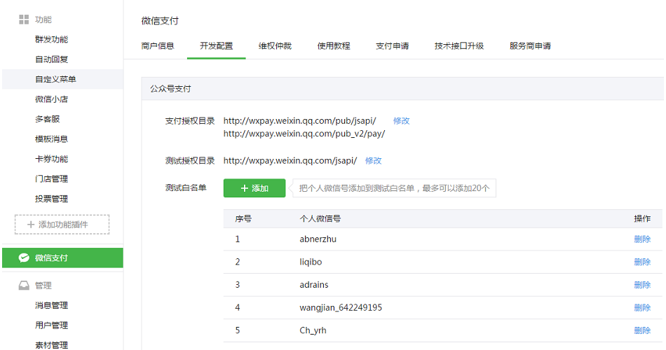

1、设置支付目录
在微信公众平台设置您的公众号支付支付目录，设置见下图。公众号支付在请求支付的时候会校验请求来源是否有在公众平台做了配置，所以必须确保支付目录已经正确的被配置，否则将验证失败，请求支付不成功。
网址 : https://pay.weixin.qq.com/index.php/extend/pay_setting

重要说明
如果您的支付地址为 www.***.com/wx/pay那么支付目录应为www.***.com/wx/
最后一个目录，以 / 结尾！否则会报错 : "URL 未注册"！
2、设置授权域名
开发公众号支付时还需要使用 jssdk , 请在公众号内正确设置 js 安全域名！
完整演示代码 - 前端 : wx_pay.php
<!DOCTYPE html>
<html>
<head>
<meta charset="utf-8">
<meta name="viewport" content="initial-scale=1.0, maximum-scale=1.0, user-scalable=no" />
<title>微信支付测试</title>
</head>
<body>
<h1>微信支付测试</h1>
<div style="padding:28px; padding-bottom:0px; line-height:28px; text-align:center;">
点击下面按钮会调用微信支付，支付1元！
</div>
<div style="padding:28px;"><button type="button" class="" id="btn1">立即支付</button></div>
<script type="text/javascript" src="https://apps.bdimg.com/libs/jquery/2.1.4/jquery.min.js"></script>
<?php
$gracewechat = tool('graceWeChat');
$jsConfig = $gracewechat->getJsTicket();
?>
<script type="text/javascript" src="http://res.wx.qq.com/open/js/jweixin-1.2.0.js"></script>
<script type="text/javascript">
wx.config({
debug: false,
appId: '<?php echo $gracewechat->appId;?>', // 必填，公众号的唯一标识
timestamp: <?php echo $jsConfig["timestamp"];?>,
nonceStr: '<?php echo $jsConfig["nonceStr"];?>',
signature: '<?php echo $jsConfig["signature"];?>',
jsApiList: ['chooseWXPay']
});
</script>
<script type="text/javascript">
$('#btn1').click(function(){
$.getJSON(
'/wx/order',
function(res){
console.log(res);
if(!res.paySign){
alert('微信支付失败，请重试！');
return false;
}
//发起微信支付
WeixinJSBridge.invoke(
'getBrandWCPayRequest',
{
"appId" : res.appId,
"timeStamp" : res.timeStamp,
"nonceStr" : res.nonceStr,
"package" : res.package,
"signType" : "MD5",
"paySign" : res.paySign
},
function(res){
if(res.err_msg == "get_brand_wcpay_request:ok"){
alert('支付成功，感谢您的支持！');
}else if(res.err_msg == "get_brand_wcpay_request:cancel"){
alert('您取消了支付');
}else if(res.err_msg == "get_brand_wcpay_request:fail"){
alert('支付失败');
}
}
);
return;
}
);
});
</script>
</body>
</html>
后端 - 统一下单接口
请打开 graceWechat.php，正确填写以下配置 :
//公众号开发配置
define('GWECHAT_appId', '***'); //公众号appId
define('GWECHAT_APPSECRET', '***'); //公众号APPSECRET
//微信支付[ 公众号内支付 ] 需要的配置
define('GWECHAT_WXPAY_MCHID', '******'); //微信支付对应的商户ID
define('GWECHAT_WXPAY_KEY', '******'); //微信支付对应的秘钥
后端代码 :
<?php
class wxController extends grace{
public function index(){}
public function pay(){}
public function order(){
/*
* 微信支付后端示例代码
* 模拟一个1元的支付信息，真实环境可以利用订单数据来产生下面的order数据
*/
//模拟一个简单的订单信息
$order = array(
'id' => '100', //订单号码
'price' => 1 //订单价格
);
//使用统一下单接口返回微信支付前端必须的信息
$orderWxPay = array();
$orderWxPay['body'] = 'test...'; //支付描述
$orderWxPay['out_trade_no'] = time().$order['id']; //商户系统内部订单号，要求32个字符内
$orderWxPay['total_fee'] = $order['price']; //总价，需要 * 100
$orderWxPay['notify_url'] = 'http://www.phpgrace.com/wx/payback/'; //异步接收微信支付结果通知的回调地址
$orderWxPay['openid'] = 'ousKUxLX36V7c0yizEQnAWnQsRCk'; //客户的openid 公众号支付必须参数，通过登录即可获取
//实例化微信支付对象
$gracewechat = tool('graceWeChat');
//生成订单并返回支付必须的信息
$gracewechat->createOrder($orderWxPay);
}
}
异步通知接口 $gracewechat->payBack()
$gracewechat->payBack() 会对异步通知的信息进行检查，检查无误后返回数组形式的支付信息。
<?php
class wxController extends grace{
public function index(){
}
//......
public function payback(){
$gracewechat = tool('graceWeChat');
//生成订单并返回支付必须的信息
$res = $gracewechat->payBack();
//将 res 数组与数据库内订单信息进行比对，比对后进行后续操作，如：更新订单、发送通知......
}
payBack() 检查无误后返回数组形式：
{
"return_code":"SUCCESS",
"return_msg":"OK",
"appid":"******",
"mch_id":"******",
"nonce_str":"nrMzODXynJF553vy",
"sign":"*****",
"result_code":"SUCCESS",
"openid":"ousKUxLX36V7c0yizEQnAWnQsRCk",
"is_subscribe":"Y",
"trade_type":"JSAPI",
"bank_type":"CFT",
"total_fee":"1",
"fee_type":"CNY",
"transaction_id":"4200000120201805085218270402",
"out_trade_no":"1525761696100",
"attach":[],
"time_end":"20180508144147",
"trade_state":"SUCCESS",
"cash_fee":"1",
"trade_state_desc":"\u652f\u4ed8\u6210\u529f"
}